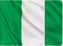

My name is Chioma Nwosu. I was born I was born in Nigeria and I currently live in the western part of Nigeria. I love to listen to music and I love to learn new things.
Nigeria
Nigeria, country located on the western coast of Africa. Nigeria has a diverse geography, with climates ranging from arid to humid equatorial. However, Nigeria’s most diverse feature is its people. Hundreds of languages are spoken in the country, including Yoruba, Igbo, Fula, Hausa, Edo, Ibibio, Tiv, and English. The country has abundant natural resources, notably large deposits of petroleum and natural gas.